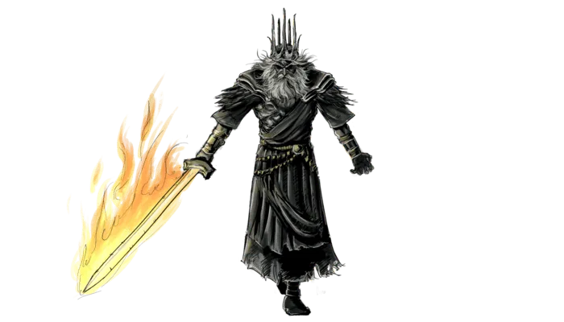
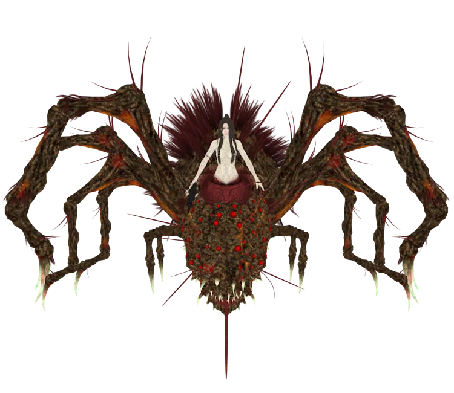
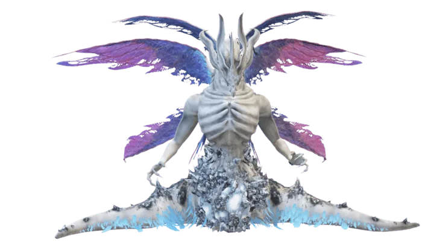
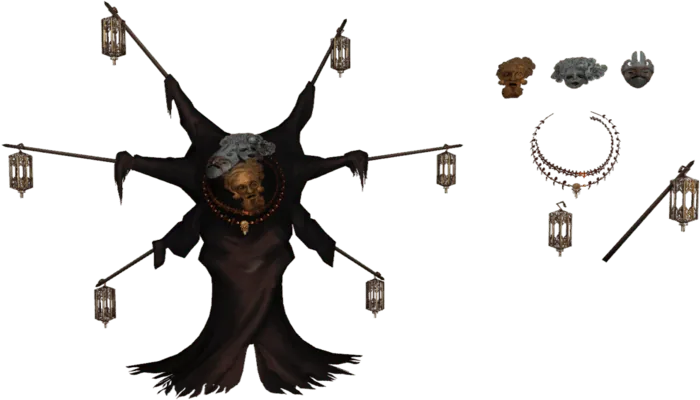

A Filosofia da Transitoriedade em Dark Souls
Quando a Resistência ao Fim Gera o Sofrimento
Dark Souls constrói sua narrativa sobre uma verdade implacável: tentar prolongar o que deveria findar é a raiz de toda decadência. O jogo expõe, através de seus personagens e mundo, como a negação do ciclo natural (crescimento, amadurecimento, declínio e morte) corrompe não apenas indivíduos, mas a própria estrutura da realidade. A insistência em congelar o tempo ou estender uma era condenada transforma-se em maldição, e os que se agarram ao poder tornam-se caricaturas grotescas de seu antigo esplendor.
Gwyn, o Senhor da Luz
Gwyn, aterrorizado pela chegada da Era da Escuridão, se recusou a aceitar o destino, sacrificando sua alma para reacender a Primeira Chama e prolongar a Era do Fogo. Em suma, Gwyn fracassou porque sua obsessão em combater a ordem natural das coisas e prolongar uma era que estava destinada a terminar levou a consequências desastrosas para seu reino, para a humanidade e para si mesmo, culminando na eventual ruína de seu legado e na perpetuação de um ciclo de decadência.

A Bruxa de Izalith
Ao tentar replicar a Chama Primordial, sua piromancia descontrolada deu origem a Chama do Caos, uma energia que deformou Izalith e seus habitantes em demônios. A Bruxa, reduzida a uma larva impotente, e suas filhas (como Queelag e a Fair Lady), condenadas a sofrer eternamente com seus corpos transformados.

Seath, o Sem-Escamas: A Inveja que Consome
Traidor de sua espécie por invejar a imortalidade dos dragões, Seath alcançou sua obsessão através do Cristal Imortal, apenas para descobrir que a eternidade sem significado é uma prisão. Sua sanidade dissipou-se junto com sua visão, deixando apenas um monstro que torturava inocentes em experimentos insanos.

Pinwheel
Após a morte da esposa e do filho, Pinwheel mergulhou na necromancia. Seu ritual de desespero deu certo, mas de forma grotesca: ele fundiu as almas da família em seu próprio corpo. As três máscaras que ele usa representam essa união forçada. Quando o jogador o encontra, ele ainda está buscando uma forma de consertar seu erro.

O Legado de Lordran: Um Mundo em Agonia
A distorção temporal de Lordran (onde heróis de eras passadas coexistem em um presente estilhaçado) é a metáfora máxima dessa resistência ao natural. O jogo não poupa o jogador: até os NPCs que buscam fugir de seu destino (como Solaire, devorado por sua própria obsessão) sucumbem.
Dark Souls ensina que a beleza da existência está em sua fugacidade. Tentar preservá-la à força é condenar-se a uma existência pálida, onde mesmo a vitória tem gosto de cinzas. A aceitação do fim, seja pessoal ou cósmico, não é derrota, mas a única forma de evitar tornar-se Hollow: não de corpo, mas de espírito.
Moralidade Ambígua e Personagens Complexos
Não há vilões absolutos. Gwyn, por exemplo, é movido por medo, não por maldade. Suas ações são questionáveis, mas compreensíveis. Dark Souls rejeita dicotomias simplistas e abraça a complexidade moral. A história é escrita por sobreviventes, distorcida por interesses, e muitas vezes oculta por conveniência. O jogador é desafiado a julgar por si mesmo e a aceitar que talvez não haja julgamento definitivo.